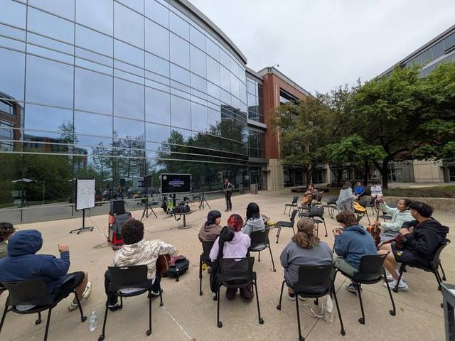
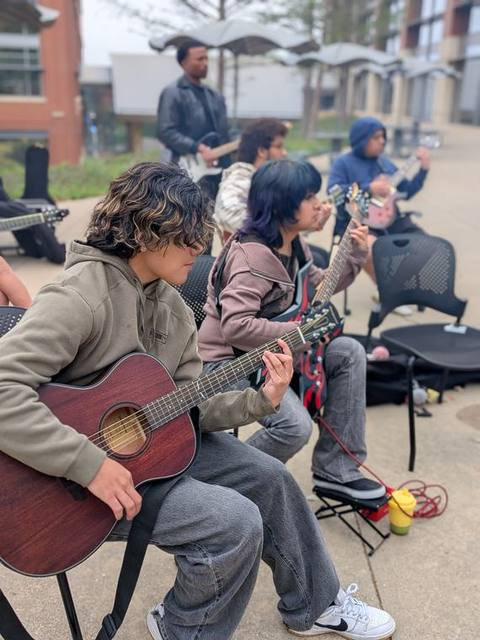

We teach each other
Advisers help, but most of the learning is lateral. The player who figured out barre chords last month is teaching them this month. That is what makes the club sustainable when twenty-five people walk in at once.

Fort Worth · Texas
Twice a week a circle forms on the Trinity River campus. Somebody hands you a guitar. Somebody else teaches you the chord. By the end of the semester you are on a stage. That is the whole club.
Who we are
The Trinity River Guitar Club is a group of college students, faculty and staff in Fort Worth who meet twice a week to get better at the guitar and to build something harder to measure — a place to belong.
There is no entrance exam. There is no genre requirement. Members show up with metal riffs, bossa nova, worship sets, Radiohead, corridos, and half-finished songs they wrote at 2 a.m. All of it counts. Some members are working on their own playing. Others are learning ensemble arrangements the club performs in front of live audiences.
If you own a guitar, bring it. The club keeps a small stock of loaner instruments and they go fast, so every player who arrives with their own leaves one more free for a beginner. And if you do not have a guitar yet, that is exactly what the loaners are for — walk in empty-handed and one will be waiting, thanks to Dr. Sean Madison and the campus administration. Amps come from faculty and staff who wanted this to exist.
“Guitar club is a pretty unique place where a lot of us come together, we learn from each other, and we show each other what we know.” — Club member

What actually happens
Advisers help, but most of the learning is lateral. The player who figured out barre chords last month is teaching them this month. That is what makes the club sustainable when twenty-five people walk in at once.
Every semester the club picks songs together — beginners and advanced players in the same vote — then arranges them so there is a part for every skill level. Nobody sits out because the song is too hard.
Cafeteria concerts. The Campfire Strum Along out on the plaza. Halloween sets in the atrium. The point of practicing all semester is that at some point you stop practicing and start performing.
“The amount of community they build in the small amount of time they're here has been really pretty remarkable.”
— Club sponsor, on why this keeps working
How it started
Every club that lasts has an origin story that starts with one person asking another person a simple question. Ours was: “Hey — would you be interested in helping me start a guitar club?”
The answer was yes. It has been yes ever since.
Bill walked up to a colleague and asked whether he wanted to help start a guitar club. Bill and Sean founded it, wrote the first chapter, and lit the fire — years before anyone knew how far it would travel. Everything on this site traces back to that conversation.
Hal took over as adviser and kept the thing alive through the hardest possible stretch for any student organization. He is the heart and soul of this club and the engine that keeps it moving — and he is the chords guy: if you need a shape, an inversion, or to know why your hand hurts, that is Hal's department.
Hal mentioned in passing at a Connections Week event that he sponsored the guitar club. Stew said that sounded like a cool way to get involved, and never left. A professional musician before he was a sponsor — blues, bluegrass and rock — he is the songs guy: arrangements, set lists, and getting a group of people to land on the same beat.
An Associate Professor of Music who already taught guitar lessons on campus, Héctor came on as a sponsor and brought the piece the club had been picking up by ear: theory and composition. Chords from Hal, songs from Stew, and now the reasoning underneath both.
Officers are elected every May. Members choose the songs. The advisers carry gear and answer questions. The club belongs to the students who show up — which is exactly how Bill and Sean drew it up.
The people behind it
Five names. One long chain of people saying yes.
Who started it
Asked the question that started all of it. Built the club from nothing but an idea and a couple of guitars.
Said yes. Helped establish the club, set the tone, and made room for whoever walked through the door.
Who keeps it running
The heart and soul of the club, and the engine that keeps it going. Took the reins and never let go. Teaches chords, hauls gear, and gets quiet students onto a stage.
A professional musician before he was a sponsor — blues, bluegrass and rock. Runs songs and arrangements, and turns a room of individual players into something that sounds like a band.
Associate Professor of Music. Teaches guitar lessons on campus and guides the club through theory and composition — the reasoning under the shapes everyone else is playing.
President · Tarrant County College Trinity River
A club like this does not survive on enthusiasm alone. It survives because someone in a position to help decides that students learning music together is worth backing.
The club owes an enormous debt to Dr. Sean Madison and the campus administration, whose support included the purchase of multiple guitars placed directly into students' hands.
That decision is the reason a student can walk into a meeting having never touched a guitar and walk out having played one. Those loaners are the club’s way in for anyone starting from zero — and because there are only so many of them, members who own a guitar are asked to bring it and keep a loaner free for the next beginner. Every first chord played at a Tuesday meeting is a direct result of that investment.
Thank you to Dr. Madison, to the administration, and to the faculty and staff who donated amps and gear so the sound could carry. You built the room. The students filled it.
In their words
“I joined because I needed a new hobby between classes. When I started I didn't know anything at all — then I learned all the basics and got to talk to people about guitars, which made me want to play even more.” — Club member
“We're all like one big friend group. Even when guitar club isn't meeting, if any of us are on campus, we just hang out.” — Club member
“It's phenomenal. Students who are very introverted end up playing out there in front of everybody.” — Hal Macias, adviser
“I became an officer because I really like the community. I wanted to help the community of the guitar club grow.” — Club officer
“My favorite thing is seeing everybody and playing with them. It's one thing playing by yourself — it's another playing in a group. I really hope we finish the year playing a concert with all of our members.” — Club member
“One of the biggest things we try to do is get newer people to join in. I'd barely touched a guitar when I started. It doesn't matter your experience — we still want you here.” — Club member
Purpose & governance
“The purpose of this club is to provide a space for students to further their musical skill on the guitar through mentorship and guided instruction.”
That is Article II, straight out of the constitution. The rest of the document covers officers and their duties, member eligibility, elections each May, meeting times, amendments, and the club's anti-hazing policy. Officers are students. Elections are real. The club is governed by its members.
Five officer seats: President, Vice President, Treasurer, Secretary, and Senator to the Student Government Association.
Come find us
Tuesdays 11:30 AM–12:30 PM. Fridays 12:00 –1:00 PM. Location is announced the day of the meeting. Have a guitar? Bring it. Need one? We have loaners.